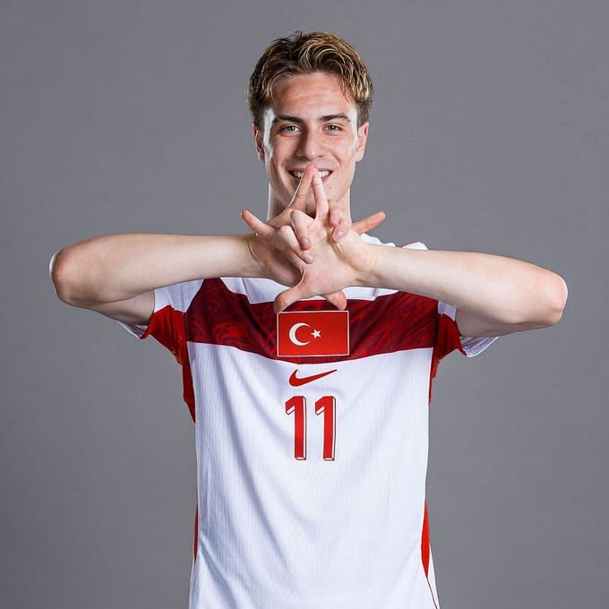

Biografia
Por: Gabrieli Furtado

Kenan Yıldız nasceu em 4 de maio de 2005, em Regensburg, na Alemanha. Filho de pai turco e mãe alemã, escolheu representar a Turquia no futebol. Iniciou sua carreira nas categorias de base do Bayern de Munique e, em 2022, transferiu-se para a Juventus. Em pouco tempo, estreou pela equipe principal e se destacou como um dos jovens talentos do futebol europeu, conhecido por sua habilidade, criatividade e velocidade.